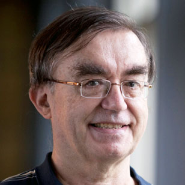
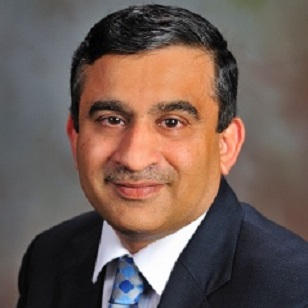
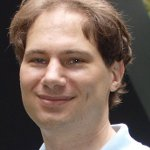
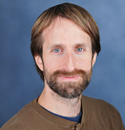
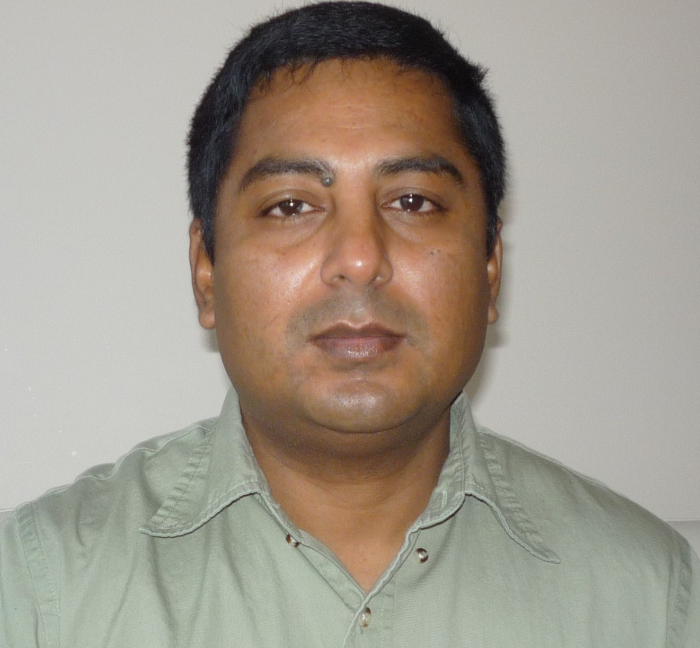

|  | Geoffrey Fox Geoffrey Fox received a Ph.D. in Theoretical Physics from Cambridge University and is now professor of Informatics and Computing, and Physics at Indiana University as well as director of the Digital Science Center and Associate Dean for Research and Graduate Studies at the School of Informatics and Computing. He currently works in applying computer science to Bioinformatics, Defense, Earthquake and Ice-sheet Science, Particle Physics and Chemical Informatics and is principal investigator of FutureGrid - a new facility to enable development of new approaches to computing. He is involved in several projects to enhance the capabilities of Minority Serving Institutions. |
 |
Shantenu Jha Prof. Shantenu Jha is an Associate Professor at Rutgers University, a member of the Graduate Faculty in the School of Informatics at the University of Edinburgh (UK), and a Visiting Scientist at University College London. Before moving to Rutgers, he was the lead for Cyberinfrastructure Research and Development at the CCT at Louisiana State University. His research interests lie at the triple point of Applied Computing, Cyberinfrastructure R&D and Computational Science. Shantenu is the PI of RADICAL and the lead investigator of RADICAL-Cybertools (including SAGA http://www.saga-project.org), which is a community standard and is part of the official middleware/software stack of most major Production Distributed Cyberinfrastructure - such as US NSF's XSEDE and the European Grid Infrastructure. |
| Gregor von Laszewski Gregor von Laszewski is an Assistant Director of CGL and DSC in the Digital Science Center, School of Informatics and Computing, Indiana University, and an Adjunct Associate Professor at Indiana University in the Computer Science department. He is currently conducting research in cloud computing. He held a position at Argonne National Laboratory from Nov. 1996 - Aug. 2009 where he was a scientist and a fellow of the Computation Institute at University of Chicago. During the last two years of that appointment he was on sabbatical and held a position as Associate Professor and the Director of a Lab at Rochester Institute of Technology focusing on Cyberinfrastructure. He received a Masters Degree in 1990 from the University of Bonn, Germany, and a Ph.D. in 1996 from Syracuse University in Computer Science. He has been involved in Grid computing since the term was coined. Current research interests are in the areas of cloud computing. |
|
 |
Judy Qiu Dr. Qiu is an assistant professor of Computer Science at Indiana University. She graduated from Syracuse University with an Outstanding Graduate Student Award, completing her Ph.D. in Computer Science in 2005. She leads the SALSA project, encompassing data-intensive computing at the intersection of Cloud and multicore technologies, and offers an online course CloudMOOC as part of the Data Science Program of the School of Informatics and Computing. Her research has been funded by NSF, NIH, Microsoft, Google and Indiana University. She is the recipient of a NSF CAREER Award in 2012 and Indiana University Trustees Award For Teaching Excellence in 2013-2014. |
|  | Madhav V. Marathe Marathe is an expert in interaction-based modeling and the simulation of large, complex biological, information, social, and technical systems. As the Director of the Network Dynamics and Simulation Science Laboratory, he leads the basic and applied research program where researchers are advancing the science and engineering of co-evolving complex networks and developing innovative computational tools based on these advances to support policy informatics. Marathe is an ACM Fellow for his contributions to high-performance computing algorithms and software environments for simulating and analyzing socio-technical systems. Marathe is also named a Fellow of IEEE for his contributions to the development of formal models and software tools for understanding socio-technical networks. |
 |
David Crandall David Crandall received a Ph.D. in computer science from Cornell University in 2008 and M.S. and B.S. degrees in computer science and engineering from Pennsylvania State University in 2001. He worked as a postdoctoral associate at Cornell from 2008-2010, and as a research scientist at Eastman Kodak Company from 2001-2003. His main research interest is computer vision, the area of computer science that tries to design algorithms that can “see”. He is particularly interested in visual object recognition and scene understanding. He is also interested in other problems that involve analyzing and modeling large amounts of uncertain data, notably in mining data from the web and from online social networking sites. |
|  | Oliver Beckstein Oliver Beckstein leads a Computational Biophysics research group in the Center for Biological Physics and the Department of Physics at Arizona State University. His lab uses computational approaches such as molecular dynamics simulations in order to understand the function of biomolecules, in particular membrane proteins, at the molecular level. |
| Fusheng Wang Dr. Wang is an Assistant Professor in the Department of Computer Science and the Department of Biomedical Informatics at Stony Brook University. He received his Ph.D. in computer science from the University of California, Los Angeles. Before coming to Stony Brook, Wang was an assistant professor at Emory University; he was a research scientist at Siemens Corporate Research before joining Emory University. Dr. Wang’s research interests include Scalable Big Data Management and Analytics, Spatial and Temporal Data Management and Analytics, Medical Imaging Informatics, Clinical Natural Language Processing, Data Semantics and Standardization. He will lead the research and development of the project's spatial queries and analytics algorithms, and collaborate with Dr. Jun Kong on researching and developing a pathology image analysis library. He alsohopes to work with GIS/spatial and pathology informatics communities on evaluating and adopting the proposed libraries and systems. |
|
 |
Jun Kong Dr. Kong is an assistant professor at the Department of Biomedical Informatics, Emory University. His research interests include biomedical image analysis, computer-aid diagnosis, machine learning, whole-slide microscopy image processing, computer vision, bio-imaging informatics, and signal processing for large-scale biomedical translational research. He received his Ph.D. in Electric Engineering from Ohio State University. He will collaborate with Dr. Fusheng Wang on the development of pathology image analysis algorithms for both 2D and 3D images, as well as co-advise graduate students on image algorithm development. |
| Andrew Luckow Andrew Luckow is a consultant in the SAGA Group. He studied Computer Science at the Potsdam University where he obtained his doctorate degree in 2009. His main research interests are distributed systems, fault tolerance, computational sciences and programming languages. |
|
| Ioannis Paraskevakos Ioannis Paraskevakos is a first year PhD student at Rutgers University and a new member at RADICAL lab. Before his PhD studies, he acquired a diploma (5-year studies) in Computer Engineering and Informatics, a Master of Science in Integrated Hardware and Software Systems, and has worked for three-and-a-half years as an IC Design Engineer at an IP Semiconductor Company in Greece. |
|
|  | John Paden Dr. John Paden is an associate scientist at the Center for Remote Sensing of Ice Sheets (CReSIS) at the University of Kansas where he leads the signal and data processing efforts for the center. He previously worked for Vexcel Corporation as a system engineer for radars and related technologies including work on a 3D imaging algorithm and system. His research focuses on sounding and imaging radar systems and data analysis and interpretation from these systems. |
 |
Theresa Stumpf Theresa Stumpf is a graduate student at the University of Kansas working on developing new ultra-broad bandwidth 3-D imaging algorithms and applying these algorithms to ice sheet bed mapping using multichannel radar depth sounder data collected by the Center for Remote Sensing of Ice Sheets (CReSIS). |
|  | Maleq Khan Maleq Khan is working as a Research Scientist at the Network Dynamics and Simulation Science Laboratory (NDSSL) at Virginia Bioinformatics Institute (VBI) of Virginia Tech. He received his Ph.D. in Computer Science from Purdue University. His research interests are network science, complex networks, distributed algorithms, wireless networks, and data mining. He has published many peer-reviewed journal and conference papers on these topics. He co-discovered many fast and efficient distributed algorithms for a number of fundamental and important problems in distributed computing. One of his papers on distributed computing received the best paper award at a leading conference in this area. Currently, he is leading a project on design, implementation and prototype development of parallel graph algorithms library and co-developed efficient parallel algorithms for various graph problems such as enumerating subgraphs in a large graph. In another project, he co-developed algorithms for generating hybrid national and international scale social contact networks that detail the county level flows and then have a detailed representation within a county of the microscopic social contacts. He is also working on developing analytical methods for understanding the role of details in developing high-resolution models of complex networks. |


|
|